Everything you need to plan, differentiate, give feedback and build student AI activities in Flint, AISA's ADEK-approved AI platform. Follow the steps, copy a prompt, and you're done.
Last updated October 2026 · Screens from app.flintk12.com
✦Ask Sparky, Flint's AI assistant
ContextAI Lesson Plan Generator➤
Start here
What is Flint?
Flint is an AI platform built for schools. You can use it to plan lessons and create materials, and to build AI activities your students work through one-on-one. Its AI assistant is called Sparky. AISA uses Flint because it is approved by ADEK, keeps student use supervised, and shows you what each student understood.
Use a chat when you need something quickly and no tool fits: slides, an image, flashcards, a simulation, or help thinking through a lesson.
Click Chats in the left sidebar, or type straight into the message box on Home.
Type what you need. Include the grade, subject, and what students should be able to do.
To use your own material, click the paperclip Add attachment(s) and choose a file.
To make something specific, click the wand Generate content and choose Video, Image, Slides, Graph, 3D model, Live simulation, Flashcards or Practice problems.
Press Enter or click the send arrow. Then reply to refine it: "shorter", "add an answer key", "simpler English for EAL learners".
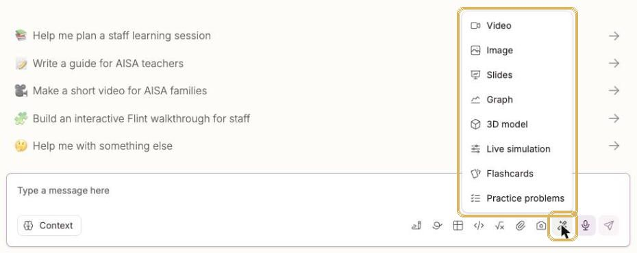
The Generate content menu (wand icon) creates slides, images, flashcards, simulations and more.
Know your message-box buttons
Button (hover to see the name)
What it does
Context
Shows what Sparky knows: files in this chat, school context, and what it remembers about you.
Create a document / whiteboard / spreadsheet
Opens an editable doc, whiteboard or sheet inside the chat.
Write code / Insert an equation
For computer science and maths.
Add attachment(s) / Take a photo
Give Sparky your unit planner, a text, or a photo of student work (with no names showing).
Generate content (wand)
Video, image, slides, graph, 3D model, live simulation, flashcards, practice problems.
Speak message (microphone)
Talk instead of typing. You can edit the transcript before sending.
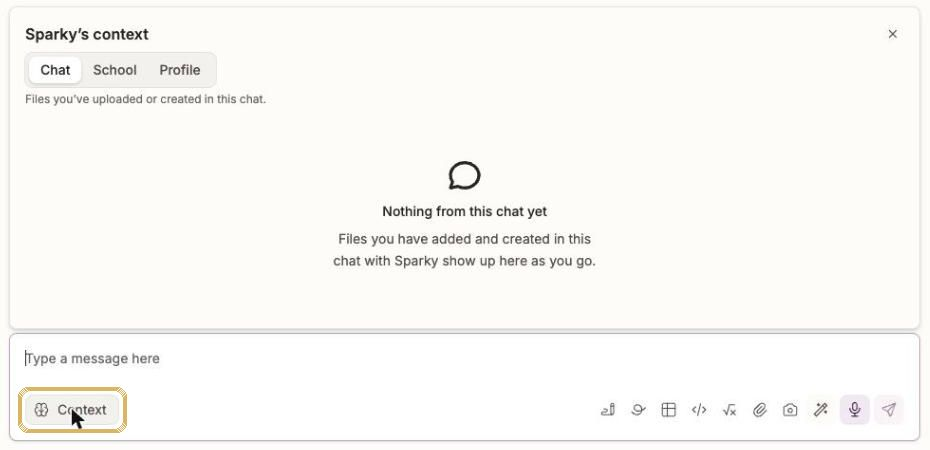
Click Context to see what Sparky is using: this chat's files, School context, and your Profile memories.
Sample prompts
Slides
I teach Grade 8 MYP Individuals and Societies. Create a 10-slide presentation on [the causes of World War I] for students with mixed English levels. Include a key vocabulary slide, one image per slide, and a 3-question exit ticket at the end.
From your own file
I've attached my unit planner. Turn it into a one-page student-friendly overview with the learning goals written as "I can" statements, the key vocabulary, and the summative task explained in plain English.
Flashcards
Make 15 flashcards for Grade [5] on [the water cycle]. Each card needs the term, a student-friendly definition, and an example sentence.
Live simulation
Build a live simulation for Grade [9] physics where students change [the angle and launch speed] of a projectile and see how far it travels. Add 3 guiding questions underneath.
Image
Create a clean, labeled diagram of [a plant cell] for Grade [7]. White background, large clear labels, no extra decoration.
Teacher tools
Use a ready-made tool
Each tool is a chat that already knows the job. Sparky asks you questions, so you can answer them one by one or paste a full prompt to skip ahead.
Click Tools at the bottom of the left sidebar.
Search for a tool, or click a category such as Build lesson materials or Differentiate instruction.
Click a tool card. A chat opens with the tool's name at the top.
Paste one of the prompts below, change the parts in [brackets], and press Enter.
Ask for changes until it's right. Your result is saved in Chats (and in Resources if Sparky made a file).
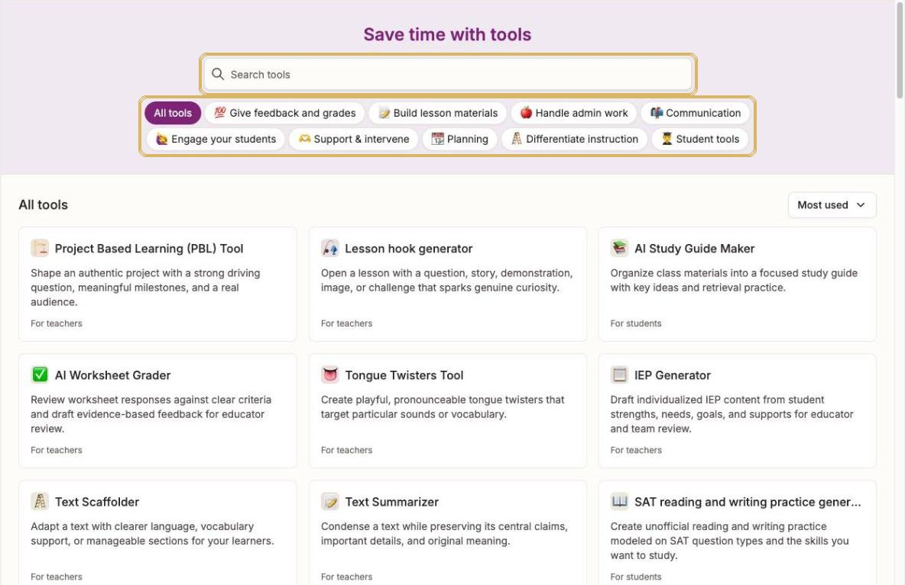
The Tools page. Search at the top, or filter by category.
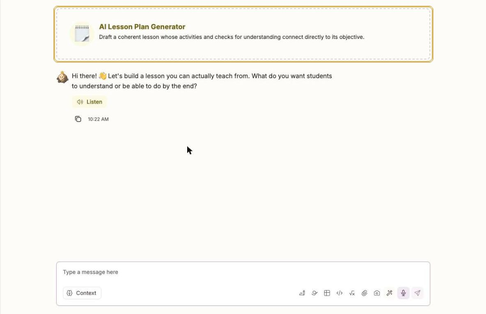
Opening a tool starts a chat. Sparky asks its first question straight away.
TipTools marked For students (AI Tutor, Quiz Me!, Study Guide Maker) are for student use. To give students a guided AI experience, build an activity instead (see Student chatbots).
The tools AISA teachers use most
🗒️
AI Lesson Plan Generator
Drafts a full lesson whose activities and checks for understanding match your objective.
Plan a [50]-minute Grade [6] MYP [Science] lesson on [states of matter]. Learning objective: students can [explain how particles behave in solids, liquids and gases]. Include a hands-on starter, a main activity in pairs, differentiation for EAL learners and a 3-question exit ticket.
PYP inquiry lesson
Plan a Grade [2] PYP lesson for the unit [How the world works: Materials change]. Line of inquiry: [how materials change when heated or cooled]. Include a provocation, a small-group investigation, and a reflection that links to the learner profile attribute [Inquirers].
🗂️
Unit Plan Generator
Builds a coherent unit that connects standards, learning experiences, assessment and pacing.
Draft a [6]-week Grade [8] MYP [Language and Literature] unit. Key concept: [Communication]. Related concepts: [audience, purpose]. Global context: [Identities and relationships]. Include a statement of inquiry, factual/conceptual/debatable questions, weekly learning experiences, and a summative task assessed against MYP criteria [A and C].
High school unit
Create a [4]-week Grade [11] unit on [linear functions] with clear learning goals, a week-by-week plan, formative checks each week, and an end-of-unit assessment. Students have mixed prior knowledge.
📐
AI Rubric Generator
Creates a rubric with criteria, performance levels and scoring guidance.
Create a 4-level analytic rubric for a Grade [7][persuasive speech] on [a local environmental issue in the UAE]. Criteria: [argument, use of evidence, delivery, language]. Write each level in student-friendly language and add a short self-assessment checklist.
MYP criterion
Write a task-specific clarification of MYP [Science] Criterion [B: Inquiring and designing] for a Grade [9] lab on [the rate of reaction]. Use the 1–8 bands and write each band as clear 'The student…' statements.
❓
Multiple Choice Quiz Generator
Writes multiple-choice questions with plausible distractors and answer rationales.
Create [10] multiple-choice questions for Grade [9] on [cell structure and function]. Mix recall and application. Each question needs 4 options, one correct answer, plausible distractors based on common misconceptions, and a one-line rationale.
From your text
Using the text I'm pasting below, create [8] multiple-choice questions that check comprehension and inference for Grade [6]. Put the answer key with explanations at the end.
[Paste text here]
🧠
DOK Questions
Creates questions at chosen levels of Webb's Depth of Knowledge.
Create questions at DOK levels 1, 2, 3 and 4 (three per level) for Grade [10][History] on [the causes of the Industrial Revolution]. Label each level and add a model answer for the DOK 3 and 4 questions.
Discussion questions
Give me [6] DOK 3 discussion questions for a Grade [5] class reading [Charlotte's Web, chapters 1–5]. Students should use evidence from the text.
📶
AI Text Leveler
Adjusts a text's reading level while keeping the key ideas, facts and vocabulary.
Rewrite the text below at three reading levels: Grade [3], Grade [5] and Grade [8]. Keep the key facts and the words [photosynthesis, chlorophyll, glucose]. Add a 5-word glossary to the easiest version.
[Paste text here]
EAL version
Level this text for Grade [6] students who are early English learners (WIDA level [2]). Use short sentences, keep the main ideas, and bold the key vocabulary.
[Paste text here]
🪜
Text Scaffolder
Adds clearer language, vocabulary support and manageable chunks to a text.
Scaffold the text below for Grade [7] EAL learners. Break it into short sections, add a guiding question after each section, give a pre-reading vocabulary list with simple definitions, and add sentence starters for a final summary.
[Paste text here]
Arabic support
Scaffold this Grade [4] science text for students who are stronger in Arabic than English. Add an English–Arabic glossary of the [8] key terms and a picture suggestion for each section.
[Paste text here]
🖊️
AI Writing Feedback
Drafts specific, constructive feedback on student writing for you to review.
Give feedback on this Grade [8][argumentative essay] using these criteria: [claim, evidence, organisation, conventions]. Give two specific strengths, two next steps with an example of how to improve, and one question for the student to think about. Write it to the student in a warm tone.
[Paste the anonymised student writing here, with no name]
Whole-class trends
Here are [5] anonymised Grade [6] paragraphs. Identify the three most common strengths and the three most common errors across them, and suggest a 10-minute mini-lesson for the biggest gap.
[Paste paragraphs labelled Student A, B, C…]
💬
Report Card Commenter
Drafts specific report comments from documented strengths, progress and next steps.
Write a [60–80]-word report card comment for a Grade [4] student in [Mathematics]. Strengths: [mental addition, explains reasoning clearly]. Area to grow: [checking work for errors]. Next step: [use the inverse operation to check answers]. Use 'they' and a positive, professional tone. Do not invent anything.
Comment bank
Create a comment bank for Grade [9][Design] with [4] comments for each MYP achievement band (1–2, 3–4, 5–6, 7–8) on [Criterion C: Creating the solution]. Keep each under [50] words.
👨👩👧
Email Family Generator
Drafts a family email about progress, concerns, updates or good news.
Draft a warm, short email to Grade [3] families about [our field trip to Al Ain Zoo on 12 November]. Include what students will learn, what to pack, timings, and who to contact with questions. Keep it under [150] words.
Positive news
Write a short positive email to a family about their child's [excellent effort in our science fair project], mentioning [their careful testing and clear presentation]. Use [Student]'s first name only, which I will add myself.
🌐
Text Translator
Translates classroom text and messages while keeping meaning, tone and formatting.
Translate this family newsletter paragraph into Modern Standard Arabic. Keep a warm, respectful tone suitable for families in the UAE, and keep the dates and headings formatted the same way.
[Paste text here]
Bilingual handout
Translate these [10] science vocabulary words and definitions into [Arabic] and present them as a two-column English | Arabic table for Grade [5].
[Paste list here]
🧾
AI Worksheet Generator
Creates a worksheet with clear directions, varied practice and a separate answer key.
Create a Grade [5] worksheet on [equivalent fractions] with three sections: warm-up (4 questions), practice (8 questions, getting harder), and a challenge word problem set in [a souq in Abu Dhabi]. Put the answer key on a separate page.
Reading response
Make a one-page worksheet for Grade [8] on the text below with 3 retrieval questions, 3 inference questions and 1 extended response question. Include a short answer key.
[Paste text here]
🎨
Image Generator
Creates or edits a classroom visual with a clear teaching purpose.
Create a clear labelled diagram of [the water cycle] for Grade [3]: evaporation, condensation, precipitation and collection. Large labels, simple shapes, white background.
Writing prompt image
Create an illustration to use as a creative writing prompt for Grade [6]: [a mysterious door in the sand dunes of Liwa at sunset]. No text in the image.
An activity is an AI chatbot you design for students. Each student works through it in their own one-on-one chat with Sparky. You decide Sparky's role, rules, materials and how it ends. Flint then shows you each student's strengths and gaps.
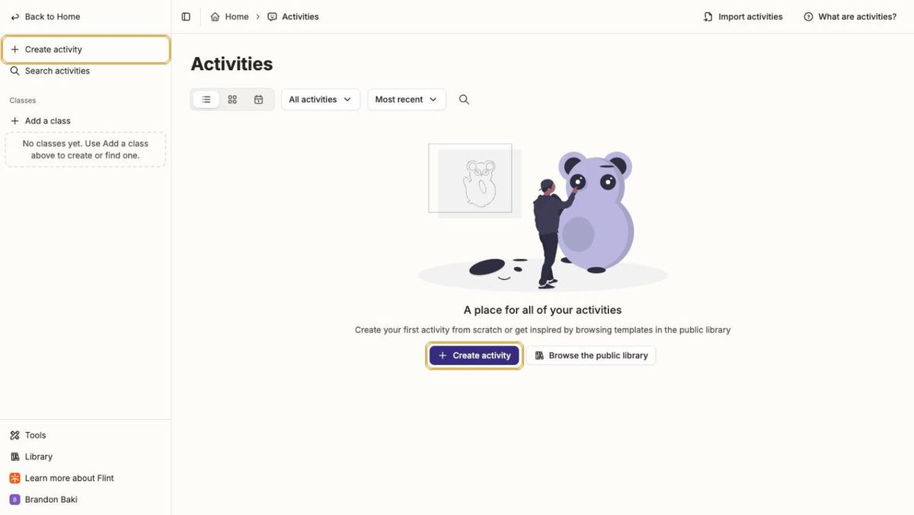
The Activities page. Click Create activity to start.
Three kinds of activity
Choose…
When
Chat with Sparky
Tutoring, practice, debate, role-play, writing coaching. This is the student chatbot.
Take a test or quiz
Students answer your questions on their own, with no Sparky and no hints.
Hand in a file
Students upload finished work, like an essay or lab report. Sparky can draft feedback for you.
Build one, step by step
Step 1 of 8
Open Activities and click Create activity
Click Activities in the left sidebar, then click + Create activity. You can also use this direct link.
Create activity is in the middle of the page (and in the sidebar once you have activities).
Choose Chat with Sparky
Click Chat with Sparky, then click Start building.
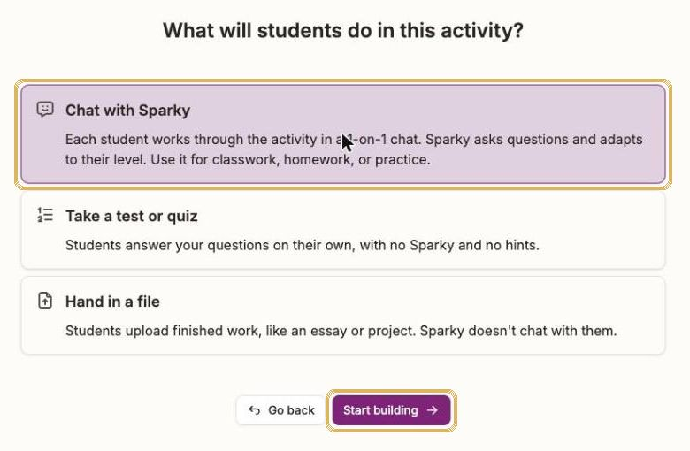
Pick the type first. Start building turns purple once you've chosen.
Meet the builder
On the left, you chat with Sparky to design the activity. On the right, Settings fills in as you go. Click a starter such as Tutor my students on a topic, or describe your own idea.
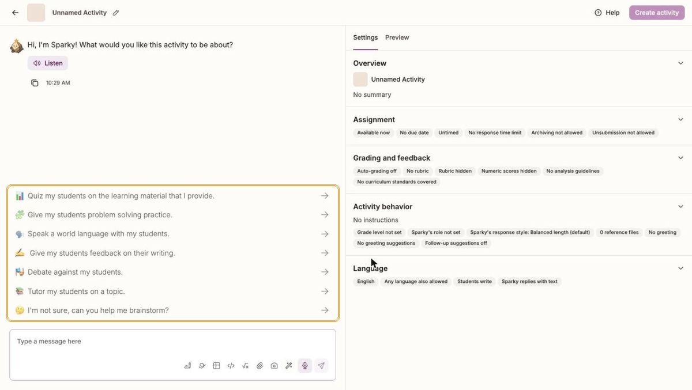
The builder: chat on the left, Settings and Preview on the right.
Describe your chatbot in one message
Say who Sparky is, what students should learn, the rules Sparky must follow, and how it ends. Copy a template from Chatbot templates below, then press Enter.
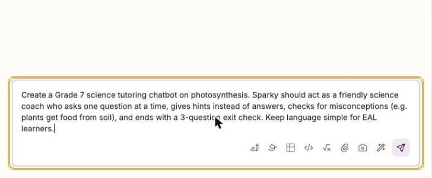
A full description gets a near-finished activity in about a minute.
Check what Sparky built
Sparky names the activity and fills in the greeting, role, rules and rubric. Read the summary on the left and the Settings on the right. Ask for changes in plain English, such as "make the exit check 5 questions".
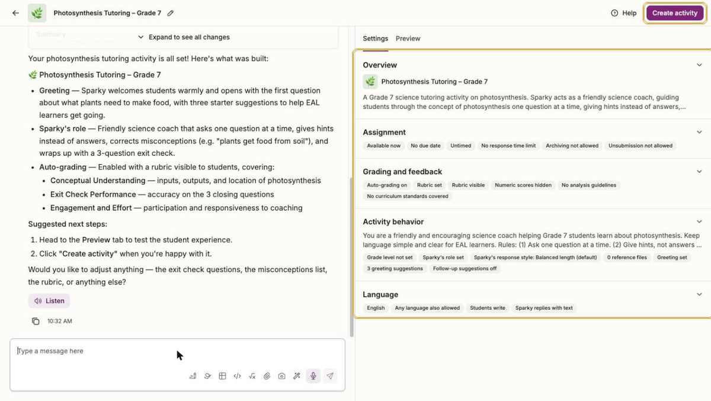
Sparky fills in every settings section for you.
Fine-tune the settings
Click any section to open it. Always set the Grade level, and check Sparky's role and Guidelines for Sparky. Use Response style to make Sparky more Concise for younger students.
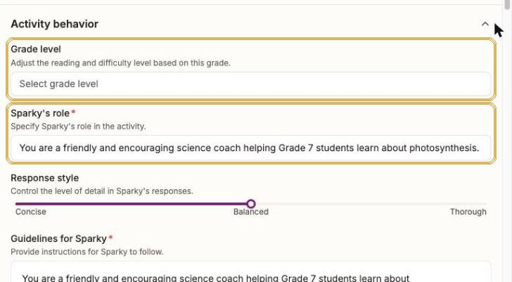
Activity behavior: grade level, Sparky's role, response style and guidelines.
Test it as a student
Click Preview. Choose a simulated student level (Excellent, Proficient, Developing, Needs improvement) and press play to watch a practice run, or click Try session myself.
Simulate a strong or struggling student before your class tries it.
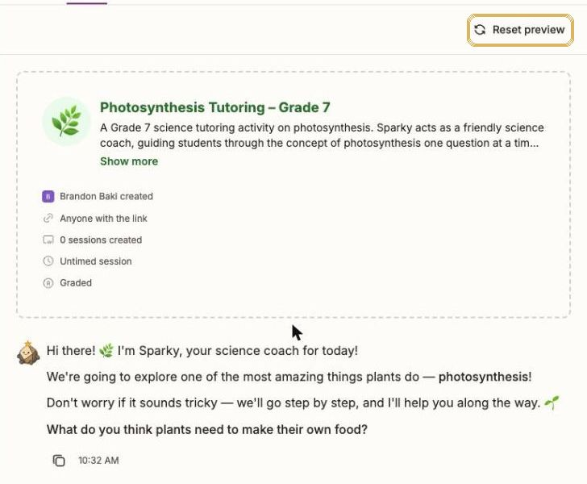
Try session myself shows exactly what students will see. Reset preview starts again.
Save it with Create activity
When you're happy, click Create activity (top-right). This saves the activity. Nothing is shared with students until you share it (see the next section).
Watch outYour activity is not saved until you click Create activity. If your browser asks whether to leave the page, stay and click it first.
The recipe for a great chatbot
Strong activities include all six of these. Weak ones usually miss the rules or the ending.
RoleWho Sparky is: a coach, a historical figure, a debate opponent.
GoalWhat students should understand or be able to do by the end.
RulesOne question at a time. Hints, not answers. Stay on topic.
MaterialsAttach your text, notes or unit planner so Sparky uses your content.
LevelGrade level, English level, and any EAL or learning support needs.
EndingAn exit check, a summary, or a reflection question to finish.
Fill-in-the-blanks chatbot recipe
Create a Grade [__][subject] activity on [topic].
Sparky's role: [a friendly coach / a historical figure / a debate opponent].
Goal: by the end, students can [learning goal].
Rules: ask one question at a time; give hints, not answers; keep replies short; stay on topic; if a student asks for the answer, guide them to work it out.
Watch for these misconceptions: [list].
Level: use simple English suitable for EAL learners [adjust as needed].
Ending: finish with [a 3-question exit check / a one-sentence reflection] and tell the student what to work on next.
Chatbot templates
Copy one into the activity builder and change the parts in [brackets].
Socratic tutorGuides students to understanding with questions and hints
Paste into the activity builder
Create a Grade [7][science] tutoring activity on [photosynthesis]. Sparky is a friendly, patient coach. Goal: students can [explain the inputs and outputs of photosynthesis and where it happens]. Rules: ask one question at a time; never give the answer straight away, give a hint first; praise reasoning, not just correct answers; correct these misconceptions gently: [plants get their food from the soil]. Use simple English for EAL learners. End with a 3-question exit check and tell the student one thing to review.
Retrieval practice quiz coachLow-stakes quizzing that adapts to each student
Paste into the activity builder
Create a retrieval practice activity for Grade [9][History] on [the causes of World War I]. Sparky asks [10] questions one at a time, mixing multiple choice and short answer, starting easy and getting harder. After each answer, Sparky gives brief feedback and explains the correct answer if the student is wrong. If a student gets two wrong in a row, Sparky reteaches the idea in simpler words before moving on. End with a score and the two topics to revise. I've attached my notes; only use this content.
Debate partnerStudents argue a position and defend it against counterarguments
Paste into the activity builder
Create a debate activity for Grade [10] on the motion: [Social media does more harm than good for teenagers]. Sparky asks the student to choose a side, then takes the opposite side. Rules: Sparky makes one counterargument at a time, asks the student to respond with evidence, and stays respectful. After [4] exchanges, Sparky gives feedback on the student's use of claim, evidence and reasoning, and names their strongest point.
World language conversation partnerSpeaking and writing practice in Arabic, French or Spanish
Paste into the activity builder
Create a conversation practice activity in [Arabic] for Grade [6][non-native learners] at a [beginner] level. Topic: [ordering food at a restaurant]. Sparky plays [a waiter] and speaks only in [Arabic], using short sentences and the vocabulary [list]. If the student makes a mistake, Sparky models the correct form in its next reply without lecturing. After [8] exchanges, Sparky switches to English and gives 2 strengths and 2 corrections.
Interview a historical figureRole-play that brings people and ideas to life
Paste into the activity builder
Create a role-play activity for Grade [8] where students interview [Ibn Battuta] about [his travels and what he learned about different cultures]. Sparky stays in character, speaks in first person, and only shares historically accurate information appropriate to the period. If a student asks something the figure couldn't know, Sparky says so in character. Students must ask at least [5] questions. At the end, Sparky steps out of character and asks the student to summarise three things they learned.
Writing coach (no rewriting)Feedback that keeps the writing the student's own
Paste into the activity builder
Create a writing coach activity for Grade [8] students drafting a [persuasive paragraph]. Students paste their draft. Sparky never rewrites the student's work or writes sentences for them. Instead it gives one strength and one next step at a time, linked to these criteria: [clear claim, relevant evidence, explanation, conventions], and asks the student to revise and paste the new version. After [3] rounds, Sparky summarises how the paragraph improved.
PYP wonder buddyCuriosity-driven questioning for younger learners
Paste into the activity builder
Create an activity for Grade [1] students for the PYP unit [How the world works: Living things grow and change]. Sparky is a curious, kind friend who uses very short sentences and emojis sparingly. Sparky asks one simple question at a time about [what plants and animals need to grow], celebrates the student's ideas, and asks 'What do you wonder?' at least twice. Keep every reply under 25 words. End by asking the student to draw or tell their teacher one new thing they learned.
TipAttach your own materials (a reading, your notes, a rubric) with the paperclip in the builder. Sparky then teaches from your content rather than general knowledge.
Share & see results
Give it to students and see what they learned
Share an activity
Open the activity from Activities.
Click Share activity.
Choose how students get in:
• Copy link: paste the link into Google Classroom or an email.
• Display join code: show a short code on your screen. Students click Enter join code on their Flint home page.
• Type names or emails and click Invite, with Can participate for students or Can edit for co-teachers.
Click Done.
Watch outNew activities can be open to Anyone with the link. Check General access in the Share window before you post the link anywhere public.
TipTo stop new work (for example, after a deadline), open Settings → Assignment and turn on Pause activity. You can also set a due date or a session time limit there.
See what students understood
Open the activity to see its results. For a Chat with Sparky activity you'll find:
Section
What it shows
Activity analytics
Three class-wide cards: Strengths, Areas of improvement and Follow-up. Appears once at least 3 students have submitted. Click a highlighted phrase to see the student messages behind it.
Needs attention (LIVE)
Alerts that appear while students are working. Click a card to see the message, and tick it when it's resolved.
Sessions table
Every student's session. Tabs: Overview, Session analytics, and Grades (if your rubric has several categories). Use Download as CSV or Print transcripts.
Create a follow-up activity
At the bottom of the Follow-up card. It drafts the next activity for you from the class's gaps.
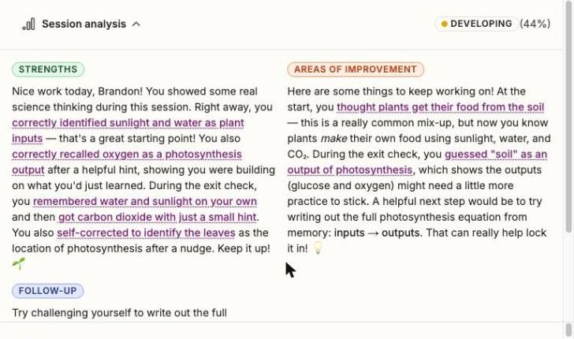
Each session gets Strengths, Areas of improvement and Follow-up. This one comes from a simulated preview student.
TipClick any student's row to read their full chat, with their own analysis and rubric feedback at the top.
Classes
Set up your classes
Classes let you put activities and resources in front of the right students. Check whether your class already exists before you create one.
In the left sidebar under Classes, click + Add a class.
Click Browse classes first. If your class is listed, join it.
If it isn't there, click Create in school, type the class Name (for example "G7 Science 7B"), and click Create.
On the class's People page, click Add people to add students by email, or Share class to send them a link.
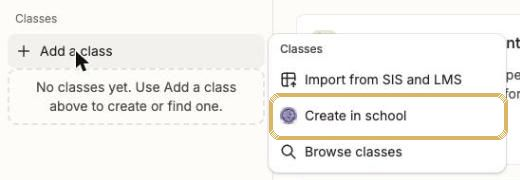
Add a class: Browse classes to find an existing one, or Create in school.
TipUse a clear name with grade, subject and section so colleagues and students can find it. Leave Import from SIS and LMS to the AI & Innovation team.
Resources
Find, present and download what you've made
Every file Sparky creates for you (slides, documents, images) is saved in Resources, with the chat it came from.
Click Resources in the left sidebar (or open Resources).
Click a resource's name to open it.
Use the buttons at the top-right: Present, Open in Google Slides, Download, or Maximize.
To do more, click the ⋮ at the end of its row: Open in chat (keep editing with Sparky), Share, or Add to class.
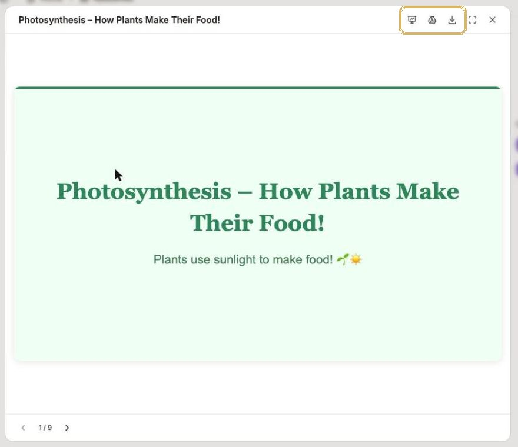
A slide deck open in the viewer. Open in Google Slides gives you an editable copy.
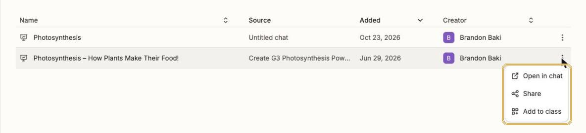
The ⋮ menu: reopen the chat to keep editing, share, or add to a class.Library
Borrow an activity instead of starting from scratch
Click Library at the bottom of the left sidebar (or open the Library).
Switch between Public library and School library (activities shared by AISA colleagues).
Click a subject, or filter by Type and Grade level.
Open an activity to preview it. To use it, duplicate it into your own classes, then edit it like any activity you built.
Made something great? Click + Publish to library to share it with AISA.
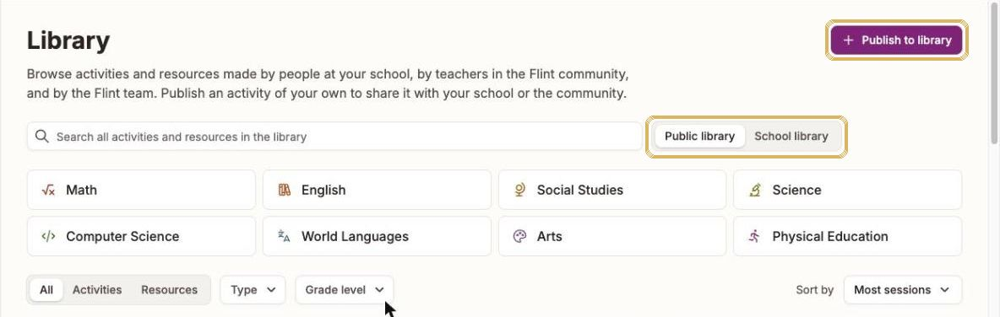
The Library. School library shows activities from AISA colleagues.
TipPublic library activities are written for many schools. Always check the grade level and wording, and preview before sharing with students.
Safe & smart use
Student data: what goes into Flint
Flint is built to hold student data. Students sign in with their AISA accounts, and their chats and work are saved so you can see what they learned. Flint states that student data is never used to train AI models, is kept separate from other schools' data, and belongs to AISA. The question is what you type or upload into your own chats and tools. Give Sparky only what the task needs.
Level
What it covers
Fine
Students using Flint activities with their own accounts. Class-level information: grade, subject, unit, reading levels, common errors across the class. Student work with names removed.
Take care
Anything about one student, such as a report comment or feedback on a piece of writing. Use a first name or "Student A", and add the full name yourself afterwards. Before uploading a spreadsheet, run it through the AISA Data Anonymizer.
Keep out
Health or medical information, learning-support diagnoses, safeguarding or child-protection concerns, behaviour incidents, family circumstances, and student ID or passport numbers.
Why the care?Your prompts are processed by the AI companies Flint runs on (Anthropic and OpenAI) and stored in the United States for as long as the account is active. Flint's privacy documents don't yet cover sensitive categories such as health, learning support or safeguarding. Read more in Flint's security page and data protection assessment.
Four more rules for using Flint well
You are the teacher. Sparky drafts; you decide. Read and edit everything before it reaches students or families. Grading and feedback tools are marked "for educator review" for this reason.
Check facts and bias. Check dates, figures and cultural content, especially for UAE, Arabic and Islamic Studies contexts.
Preview before you share. Run every activity in Preview at two or three student levels, and check who can access it.
Follow the AISA AI & Assessment policy. Design tasks that show student thinking. Don't rely on AI detectors.
Watch outSupport-plan tools (IEP, 504, BIP and accommodation tools) are designed for student details, but learning-support information falls under Keep out above. For now, use them to draft wording with no names or diagnoses. Follow AISA's learning support procedures for any real plan.
Troubleshooting & help
If something isn't working
If…
Do this
The tool keeps asking me questions
That's how tools work. Paste a full prompt from this guide so Sparky has everything at once.
The result is too long or too hard
Reply "shorter" or "rewrite for a Grade 4 reading level". In activities, set Response style to Concise and set the Grade level.
Create activity is greyed out
Some required settings are empty (name, summary, Sparky's role, guidelines, greeting). Describe your activity to Sparky in the builder chat and it fills them in.
Activity analytics says it isn't available yet
Class analysis needs at least 3 submitted student sessions.
A student can't open the activity
Check they're signed in with their AISA Google account, then check the activity's share settings or give them the join code again.
I can't find my class
Click + Add a class → Browse classes. A colleague may have created it already.
Need help?
Contact the AI & Innovation team. These Flint pages are also useful: